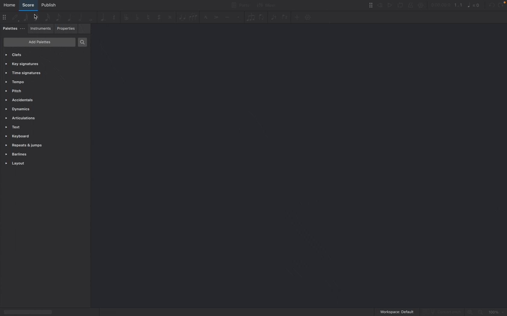
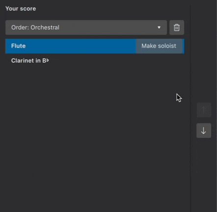
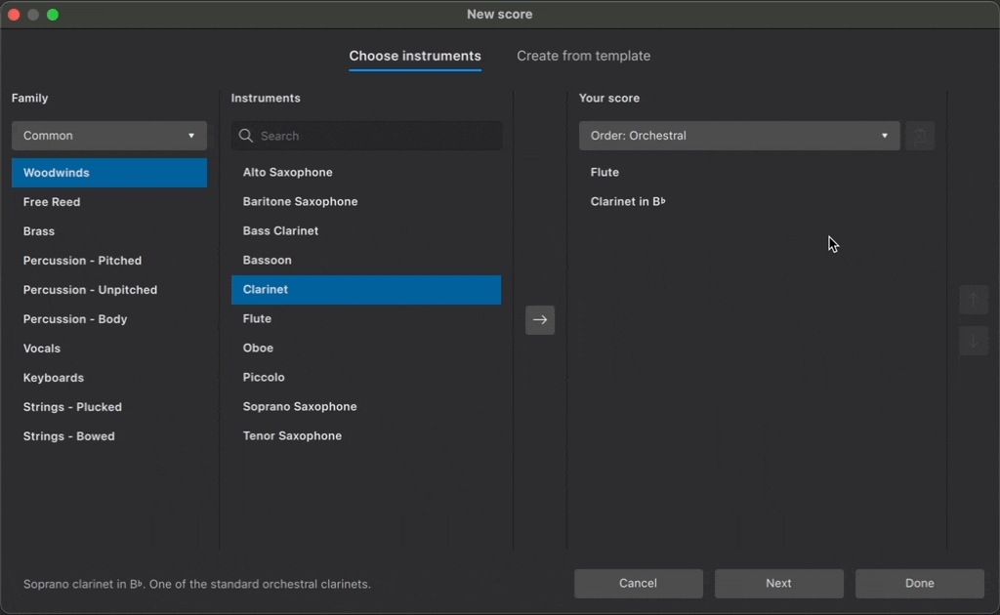
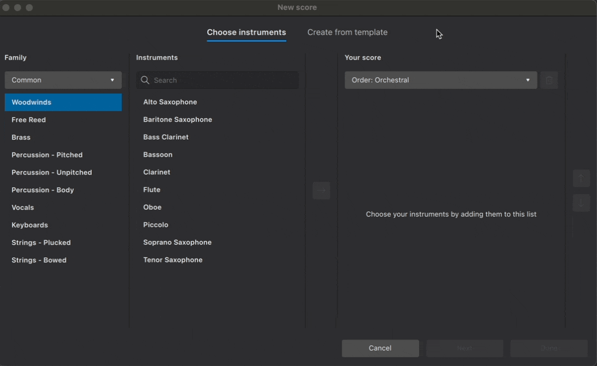

Setting up your score
Overview
To create a new score, use one of the following options:
- In the Home→Scores tab, select New score, or click New (bottom right)
- From the menu, select File→New
- Use the keyboard shortcut,
Ctrl+N(Mac:Cmd+N)

This will open the New Score dialog (more instructions about this dialog are below). Once you've finished setting up your score, it will be visible in the Score tab.
Instruments
When creating a new score, you can either choose instruments yourself or use a template that comes pre-configured with appropriate instruments (these can always be changed later).
Choose instruments
In the New Score dialog, make sure the Choose instruments tab is selected.

MuseScore contains over 500 instruments. Instruments are grouped into categories, and categories are organized into families. If you know what you’re looking for, you can type an instrument's name into the search bar. Alternatively, you can browse instruments by group from the Family dropdown menu.
Adding instruments
To add an instrument to your score:
- Double-click on an instrument name, or
- Click on the instrument name to select it, then click the → button

Instruments are automatically arranged according to the order shown in the dropdown menu under Your Score. From this menu, you can choose from a range of standard score configurations.
Changing order of instruments
To manually change the order of instruments:
- Select an instrument in the Your Score panel
- Click on ↑ or ↓ to change its position

Removing instruments
To delete an instrument from your score:
- Select an instrument in the Your Score panel
- Click the trash can button

You can also delete multiple instruments at once by first holding down Shift and selecting multiple instruments, then clicking the trash can button.
Create from template
Scores can also be created from pre-configured templates.
Templates are organized into categories based on musical style or ensemble configuration. Each template contains the instruments most commonly required for a particular type of score. Instruments are ordered and styled according to conventional practice.
To create a score from a template:
- Click Create from template
- Select a group of templates from the Category panel
- Choose your desired template from the center panel
- Click Done

You can also search across all available templates in the search bar.
Visit Templates and styles to learn more templates, including how to create your own for future use.
Additional score information
Click Next in the New score dialog to specify additional information about your score.

Key signature
By default, new scores are created with a key signature containing no sharps or flats (C major). Specify a different key signature by clicking the button under Key signature. Major keys are shown first; minor keys can be displayed by selecting the Minor tab.
Time signature
New scores are created in 4/4 by default. Change this by clicking the button under Time signature. Change the number of beats per bar using the arrows in the spin box, and change the beat quality from the dropdown menu. You can also select common and cut-common (alla-breve) time signatures in this popup.
Tempo
By default, new scores will play at a tempo of quarter note (crotchet) = 120 beats per minute (bpm). Metronome markings are not automatically included in new scores.
To customise the starting playback tempo, and to show a metronome marking above the uppermost stave:
- Click the button under Tempo
- Tick Show tempo marking on my score
- Select the desired beat value
- Enter the desired number of beats per minute in the text field (or use the up and down arrows to scroll through the tempo range)
Learn more about tempo text indications, metronome markings, and playback speed in tempo markings.
Bars
New scores are created with 32 bars and no anacrusis. To change the starting number of bars in your new score:
- Click the button under Bars
- Enter the desired number of bars in the Initial number of bars field
Learn more about Adding and removing bars at any time after score creation.
To start your score with an anacrusis:
- Click the button under Bars
- Tick Create anacrusis
- Enter the desired number of beats for the anacrusis in the text field
- Select the metrical value of the anacrusis from the drop-down menu
You can always create an anacrusis later. Learn how to do this in Anacrusis and non-metered bars.
Title and other text
Enter text in the fields at the bottom of the New score dialog, and MuseScore will automatically place it in an appropriate format in your new score. You can enter text labels for the score's:
- Title
- Composer
- Subtitle
- Lyricist
- Copyright
This information gets saved to the score's project properties, which you can change at any time.
Once you've finished specifying additional score information, click Done to confirm your selections and create your score.
Changing instruments after score creation
There are three ways to change existing score instruments:
- Use the keyboard shortcut
Iwhile in the Score tab - Click Add from the Layout panel (if this panel is not yet visible, press
F7, or select View → Layout) - Click Replace instrument in the Stave/Part properties dialog